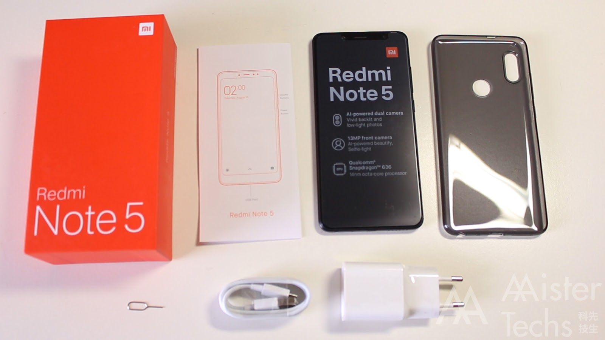
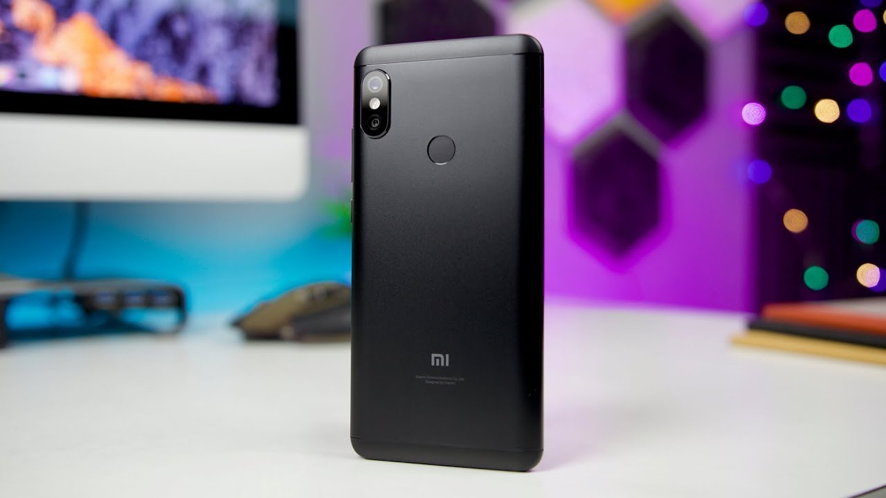

Review Xiaomi Redmi Note 5
Yang sudah-sudah, Xiaomi seri Redmi selalu mengandalkan chipset powerful dengan harga yang ‘ramah’. Saya merasa lega ketika Xiaomi merilis Redmi Note 5. Sebab, tak hanya tiba dengan chipset Snapdragon 636 yang kencang. Tapi, juga membawa kemampuan kamera yang sekelas atau mendekati smartphone flagship. Meski begitu saya harus terus terang, dikisaran harga dua sampai tiga jutaan – Redmi Note 5 bukan satu-satunya pilihan smartphone terbaik di kelasnya. Kenapa? Mari kita mulai saja, inilah review Xiaomi Redmi Note 5.
Unboxing Xiaomi Redmi Note 5 Seperti biasa, kemasan smartphone Xiaomi memiliki desain kotak dan ukuran yang minimalis dalam balutan warna orange. Unit yang saya review berwarna hitam, varian RAM 4GB, dan storage 64GB. Isi paket penjualan perangkat ini meliputi: Unit Xiaomi Redmi Note 5 Adapter charger 2A Kabel data microUSB Softcase transparan SIM ejector Buku panduan dan garansi
Desain Agak Kaku Tahun 2018 kita sudah banyak sekali disuguhi smartphone dengan desain layar penuh, demikian juga Redmi Note 5. Layar dalam rasio 18:9 ini telah menjadi fitur standar smartphone saat ini, bukan lagi hal yang spesial. Hadir dalam dimensi 158.6×75.4×8.1 mm dan bobot 181 gram, ukuran Redmi Note 5 memang terbilang bongsor dan panjang. Rupanya, bezel samping layarnya kurang tipis, bagian dahi dan dagu juga lumayan lebar. Terus desainnya juga kelihatannya kaku dan itu-itu saja (garis miring ngebosenin). Khas smartphone Redmi masih menempel dengan dua garis antena berwarna silver di punggungnya. Tapi kalau soal build quality sih sudah mantap banget, kerangka dan punggungnya bermaterial logam. Ada sedikit campuran bahan plastik di bagian bawah dan atasnya, mungkin untuk antena biar tak menggangu penerimaan sinyal. Sekarang mari bahas atribut yang menempel pada Redmi Note 5. Pada bagian muka, terpampang layar 5,99 inci yang sudah berlapis kaca 2.5D Corning Gorilla Glass – tapi tak disebutkan versinya. Bagian dagu, terdapat kamera depan 13-megapixel lengkap dengan LED flash untuk selfie. Ada pula LED untuk notifikasi, serta sensor biasa lainnya, dan earpiece. Berbalik ke belakang, bisa kita temui fingerprint sensor, serta kamera ganda dan LED flash dalam posisi vertikal yang menonjol keluar. Sebaiknya, gunakan softcasebawaan untuk melindungi dari gesekan. Beralih ke sekelilingnya, tombol volume dan power berada di sisi kanan. Lalu, SIM tray di sisi kiri – sayangnya bentuknya hybrid. Jadi, dengan berat hati Anda harus memilih apakah ingin menggunakan fungsi dual SIM (micro SIM + nano SIM) atau mengorbankan satu slot untuk menambah penyimpanan (mircoSD + nano SIM). Kemudian, di sisi atas ada infrared sensor untuk aplikasi remote control Mi Remote dan lubang mic. Serta, di sis bawah ada jack audio 3,5mm, lubang mic, port microUSB, dan loudspeaker.
Dual Camera dengan AIKemampuan kamera menjadi fitur andalan Redmi Note 5, Xiaomi menggunakan sensor gambar besutan Samsung. Sensor utama beresolusi 12-megapixel, dengan ukuran pixel 1.4 um, aperture f/1.9, dan dilengkapi teknologi autofocus dual pixel PDAF.
Sementara sensor kedua beresolusi 5-megapixel dengan ukuran pixel 1.12 μm dan aperture f/2.0. Sedangkan, kamera depannya 13-megapixel dengan pixel ukuran 1.12µm dan aperture f/2.0
Dari spesifikasinya saja sudah terlihat keseriusan Xiaomi, sistem kameranya juga dibantu teknologi kecerdasan buatan (AI). Bagaimana dengan kualitas hasil foto dan videonya? Kalau Anda pikir kualitas foto seri Redmi dan Redmi Note sebelumnya sudah bagus, maka Redmi Note 5 bisa diketegorikan spesial – salah satu yang terbaik di kelasnya. Kamera depan juga lumayan bagus, buat selfie muka kita jelas. Berkat fitur stabilisasi elektronik (EIS), hasil perekaman videonya juga stabil dan mulus banget. Sayangnya, mode manual di Redmi Note 5 terbatas untuk mengatur white balancedan ISO saja (100-3.200). Hasil fotonya juga tidak bisa disimpan dalam format RAW dan belum mendukung perekaman video 4K. Berikut beberapa tangkapan Xiaomi Redmi Note 5